Sorcier Géomancien
SORCIER GÉOMANCIEN : Le clerc tient ses pouvoirs d'une puissance supérieure. Le magicien ne fait confiance qu'aux livres contenant un savoir mystique. Le druide puise ses sorts dans la nature. Mais pour le sorcier géomancien, toutes ces formes de magie ne font qu'une. La géomancie est l'art de canaliser l'énergie magique de nombreuses sources à travers la terre elle-même. Les sorts qu'il lance grâce à ses connexions avec la terre sont le reflet de sa propre volonté.
Avantages :
- Peut apprendre des sorts de druide en plus de ceux du sorcier, et les
lance depuis le livre de sorts du sorcier.
- Au niveau 8, il peut se métamorphoser sous
différentes formes animales du druide. Il gagne une
utilisation supplémentaire tous les 3 niveaux.
- Il peut apprendre la magie de Quintessence de haut niveau.
La Quintessence tire son énergie directement de la magie
dans sa forme la plus pure, sans s'encombrer
d'intermédiaires comme les déités, la
Toile ou des incantations contraignantes. Il s'agit plutôt
d'un mélange intuitif entre les forces arcaniques et
naturelles du monde qui ne peut être ni enseigné
ni accordé.
Inconvénients :
- Malus de 15% en gain d’expérience.
- La force, la constitution et la dextérité
écopent d'une pénalité de -2.
- Souffre d'une pénalité de 1 en vitesse
d'incantation.
Prérequis :
- 13 en Sagesse, 9 en Charisme.
- Doit être d'alignement partiellement neutre.
Restrictions:
- N'utilise que les objets de sorcier.
- Est considéré comme un sorcier par les PNJ.
Portraits pour la métamorphose druidique
Ce composant améliore le sort de métamorphose du sorcier géomancien afin qu'il change automatiquement le portrait du joueur lorsque qu'il se transforme en un animal donné. Les portraits peuvent être vus ci-dessous ou en cliquant sur ce lien. N'installez pas ce composant si vous prévoyez de donner le kit à un personnage non-joueur.
Détails des mécanismes du kit
Nouveaux sorts de sorcier géomancien :
Les sorts suivants sont des sorts de prêtre et druides ajoutés au livre de sorts du sorcier géomancien. Les descriptions de ces nouveaux sorts et Capacités de haut niveau peuvent être trouvées ci-dessous.
Niveau 1
Soins des blessures légères,
Détection du mal, Enchevêtrement, Gourdin magique,
Projection d'eau
Niveau 2
Peau d'écorce, Charme personne ou
mammifère, Lame enflammée, Baies,
Résistance au Feu/Froid, Ralentissement du poison
Niveau 3
Appel de la foudre, Immobilisation des animaux, Protection
contre le feu, Soins des blessures moyennes, Guérison des
maladies, Zone d'air pur, Convocation d'insectes
Niveau 4
Convocation d'Animaux I, Action libre, Neutralisation du
poison, Protection contre la foudre, Appel des créatures des
bois, Poison
Niveau 5
Soins des blessures graves, Convocation d'Animaux II, Peau de
fer, Poussière de fée, Fléau d'insectes
Niveau 6
Soins des blessures critiques, Convocation d'Animaux III,
Conjuration d'Animaux, Conjuration d'un
élémentaire de Feu, Semences de feu,
Dégénérescence
Niveau 7
Soin, Conjuration d'un élémentaire de
terre, Rayon de soleil, Fatalité rampante, Tremblement de
terre
Niveau 8
Beauté de la Nature, Tempête de feu,
Régénération
Niveau 9
Tornade, Invoquer tertre errant
Métamorphose druidique
Le sorcier géomancien dispose aussi d'un large choix de formes animales :
Ours
Un ours brun, lent mais puissant. (CA
6, TAC0
13, 3 attaques par round à 1d6)
Chat
Même une si petite créature peut se
révéler utile. S'il doit faire preuve de
mobilité, le druide peut se métamorphoser en chat
et ainsi traverser les obstacles comme s'il disposait des sorts
hâte et action libre. (CA
4, TAC0
17, 1 attaque par round à 1d2)
Chien
Le chien n'est pas d'une grande efficacité en combat mais
dispose d'une formidable capacité de pistage. Ses sens
acérés lui permettent de détecter
facilement les pièges et ennemis. (CA 6, TAC0 16, 1
attaque par round à 1d4)
Léopard
Bien qu'il soit assez similaire à la panthère, le
léopard est un combattant plus fiable. Il est mieux
équipé pour combattre dans des lieux bien
éclairés. (CA
4, TAC0
12, 2 attaques par round à 1d8)
Elan
Un élan peut se révéler un adversaire
très dangereux lorsqu'il se sent menacé. Bien
qu'il ne soit pas le plus efficace en matière de
dégâts directs, il est capable d'assommer ses
adversaires et de les repousser en arrière grâce
à sa charge. (CA
7, TAC0
13, 1 attaque par round à 1d6)
Panthère
Une combinaison de furtivité et de puissance. La
panthère peut utiliser une attaque spéciale
liée à sa furtivité une fois par round
(50% de chances de succès, uniquement en
extérieur). En cas de succès, la
panthère devient invisible pendant un court instant, inflige
des dégâts massifs et
bénéficie d'un bonus d'attaque de +4 au TAC0 pendant
un round. (CA 3,
TAC0
14, 2 attaques par round à 1d8)
Rat
Les rats se font rarement remarquer et son extrêmement
difficiles à atteindre. Si le druide a besoin de se
déplacer furtivement, il peut se métamorphoser en
rat pour éviter d'être
repéré. (CA
16, TAC0
20, 2 attaques par round à 1d2, 90% de
résistance physique, invisibilité,
indétectable)
Serpent
Cet énorme serpent ne mord pas particulièrement
fort,
mais il peut injecter un venin empoisonné à sa
cible
à chaque frappe. Les créatures à
proximité
doivent réussir un jet de sauvegarde contre les sorts avec
une
bonus de +4 ou elles seront prises de panique. (CA 4, TAC0 15, 1
attaque par round à 1d4)
Loup
Le loup n'est pas un combattant particulièrement puissant,
mais il compense cela grâce à sa
capacité à appeler une meute de loups
à ses cotés (1-5 loups, une fois par jour) pour
30 minutes, uniquement en extérieur. (CA 3, TAC0 15, 1
attaque par round à 1d8)
Capacités de haut niveau
Le sorcier géomancien dispose d'un arbre de Capacités de haut niveau constitué de quatre branches au sommet desquelles se trouvent les sorts de magie de quintessence.
Voie de la maîtrise du lancement des sorts
Clarté (CAPACITE DE RANG 1)
Grâce à cette capacité, le sorcier
géomancien est immunisé contre la
surdité, le silence, le fourvoiement magique, la
débilité mentale et le charme.
Lucidité vocale (CAPACITE DE RANG 2)
Requiert : Clarté
Ayant appris à formuler les composantes vocales des sorts de
manière plus efficace, le sorcier géomancien est
capable de réduire le temps d'incantation de ses sorts de 2.
Maîtrise de l'incantation (CAPACITE DE
RANG 3)
Requiert : Lucidité vocale
Grâce à cette capacité, tous les sorts
lancés par le sorcier géomancien voient leur
durée
doublée. Par ailleurs, une fois par round, il peut
détecter les formes de magie dissipables dans son
environnement
immédiat.
Union de la magie (CAPACITE DE RANG 4)
Requiert : Maîtrise de l'incantation
(Magie de Quintessence)
Ecole : toutes
Durée : instantanée
Temps d'incantation : 6
Zone d'effet : rayon de 18 mètres
Jets de sauvegarde : aucun
Ce sort provoque une puissante onde de choc sur 360 degrés qui rend toutes les créatures à portée vulnérables à toutes les formes de magie, qu'elles soient issues de sorts ou d'armes magiques. Tous les sorts de défense magique sont éradiqués, les résistances aux dégâts magiques sont anéanties et la résistance magique est abaissée à zéro pendant 20 rounds. Tous les sorts dissipables sont également dissipés.
Voie de la connaissance arcanique
Mémorisation de sort
supplémentaire (CAPACITE DE RANG 1)
En choisissant cette capacité, le magicien peut lancer un
sort supplémentaire par niveau.
Connaissance des sorts
améliorée (CAPACITE DE RANG 2)
Requiert : Mémorisation de sort
supplémentaire
Grâce à votre compréhension approfondie
de la magie, vous êtes maintenant capable d'apprendre de
nouveaux sorts de prêtre qui n'étaient jusqu'alors
pas disponibles pour les druides. Les nouveaux sorts sont :
- Niveau 1 : Sanctuaire
- Niveau 2 : Silence sur 5 mètres
- Niveau 3 : Délivrance de la paralysie
- Niveau 4 : Harmonie défensive
- Niveau 5 : Ordres Chaotiques
- Niveau 6 : Ordre Majeur
- Niveau 7 : Miroir physique
- Niveau 8 : Bouclier des Archontes
- Niveau 9 : Rappel à la vie
Amélioration de sort (CAPACITE DE
RANG 3)
Requiert : Mémorisation de sort
supplémentaire
Une plus grande compréhension de toutes les forces magiques
vous permet de lancer des versions améliorées de
plusieurs sorts de magicien. En sélectionnant cette
capacité, vous pouvez lancer les sorts suivants :
- Projectiles magiques multiples de Mordenkainen
- Toile contrôlée
- Armure fantomatique améliorée
- Sphère constamment résistante d'Otiluke
- Cône de froid givrant
- Globe d'invulnérabilité majeur
- Explosion à retardement
- Immunité à l’énergie
Essence des Plans (CAPACITE DE RANG 4)
Requiert : Amélioration de sort
(Magie de Quintessence)
Ecole : toutes
Portée : champ visuel du lanceur
Durée : 20 rounds
Temps d'incantation : 9
Zone d'effet : spéciale
Jets de sauvegarde : aucun
Ce sort matérialise un orbe d'énergie pure pendant 20 rounds. Cet orbe dispose de nombreuses capacités, offensives comme défensives, et ses effets dépendent de la proximité d'alliés ou d'ennemis. Le lanceur peut profiter de son énergie de diverses façons, mais doit toujours maintenir un contact visuel avec l'orbe pour en garder le contrôle.
Une grande proximité avec l'orbe causera les effets suivants une fois par round :
Ennemis :
Horreur, Aveuglement, Rayon d'affaiblissement, Délivrance de
la magie, Mot secret, Immobilisation des Monstres, Fourvoiement magique.
Tous ces sorts sont lancés comme s'ils l'avaient été par un magicien de niveau 25. De plus, toutes les créatures de 8 dés de vie ou moins sont tuées instantanément, comme si elles avaient été victimes du sort de niveau 6 : Sort de mort.
Alliés :
Toutes les créatures amicales se
régénèrent lentement lorsqu'elles sont
proches de l'orbe. De plus, elles bénéficient
d'un bonus de 1 à la vitesse d'incantation, aux jets de
sauvegarde et au facteur de vitesse, et d'un bonus de +1 pour toutes
leurs caractéristiques.
L'orbe peut lancer les sorts suivants :
Phase élémentaire (4 fois par jour)
L'orbe choisit une cible que viendront frapper 10 orbes magiques.
Lorsque la cible est touchée, elle se retrouve
déphasée dans un des quatre plans
élémentaires pendant une fraction de seconde par
chacun
des orbes puis elle est ramenée. De ces brefs allers et
retours
ne résulte qu'un léger dégât
élémentaire (1d2), mais à la fin du
processus la
cible a 20% de chance de souffrir d'un drain de niveaux (5 niveaux), de
débilité mentale (4 rounds), ou d'être
assommée (4 rounds) par le choc des changements de phase. Il
est
aussi possible (5% de chance) que la victime ne résiste pas
au
choc et meure instantanément.
Onde de choc de pure énergie (4 fois par jour)
Ce sort projette en arrière tous les ennemis proches de
l'orbe et leur inflige 1d20 points de dégâts ainsi
qu'une réduction de 75% de leur vitesse de
déplacement pendant 1 round.
Echange d'énergie (4 fois par jour)
Tous les ennemis dans la zone ciblée sont frappés
par des éclairs qui infligent 5d5 points
de dégâts.
Balle électrique (20 fois par jour)
C'est l'attaque de base de l'orbe, elle inflige 3d6 points
de dégâts électriques et 3d6 points
de dégâts contondants à une cible
unique.
Voie de la défense magique :
Immunité aux sorts de niveau 1
(CAPACITE DE RANG 1)
Cette capacité confère au sorcier
géomancien une
invulnérabilité totale aux sorts de niveau 1.
Résistance à la magie
(CAPACITE DE RANG 2)
Requiert : Immunité aux sorts de niveau 1
Grâce à cette capacité, le sorcier
géomancien voit sa résistance à la
magie augmenter
de 33%.
Bénédiction de la Nature
(CAPACITE DE RANG 3)
Requiert : Résistance à la magie
Les sorciers géomanciens de haut niveau communient avec la
Nature. Ils y gagnent une meilleure connexion avec les forces de l'Eau,
du Feu et de l'Air, ce qui apporte au sorcier géomancien un
bonus permanent de +1 en sagesse et une résistance accrue de
10% au feu, au froid et à
l'électricité.
Futilité arcanique (CAPACITE DE RANG
4)
Requiert : Bénédiction de la Nature
(Magie de Quintessence)
Ecole : toutes
Durée : 5 rounds
Temps d'incantation : 1
Zone d'effet : le lanceur de sorts
Jets de sauvegarde : aucun
Grâce à ce sort, le mage s'entoure d'une carapace qui l'isole de toutes les formes de magie pendant une courte période. Pendant 5 rounds, il bénéficie d'une immunité totale aux dégâts, effets et armes magiques. De plus, elle confère au joueur 100% de résistance à la magie et l'immunité à l’Arrêt du temps. De part sa nature, ce sort dissipe tous les effets magiques affectant le lanceur mais ne l’empêche pas de lancer de nouveaux sorts affectant l’intérieur comme l’extérieur de la carapace.
Voie des pouvoirs Druidiques
Immunités druidiques (CAPACITE DE
RANG 1)
En tant que druide de haut niveau, vous êtes
immunisé contre toutes les formes de poisons, maladies et
drains de niveau. Les armes non-magiques n'ont aucun effet sur vous et
vous ne pouvez pas être victime de sommeil. De plus, vous
gagnez 25% de résistance au feu, à
l'électricité, au froid et à l'acide.
Transformation élémentaire
(CAPACITE DE RANG 2)
Requiert: Immunités druidiques
Grâce à cette capacité, le sorcier
géomancien est capable de se métamorphoser en un
élémentaire de feu, d'air, de terre ou d'eau (24
dés de vie). Ces formes élémentaires
ont
différentes forces et faiblesses selon leur nature. Le
druide
est également soigné de 3d10 points de vie
lorsqu'il
revient à sa forme humaine. Cette capacité dure 5
tours,
ou jusqu'à ce que le druide y mette fin.
Marche planaire (Terre) (CAPACITE DE RANG 3)
Requiert : Transformation élémentaire
Grâce à sa connaissance des
éléments, le
sorcier géomancien est capable fusionner avec n'importe quel
type de terrain, et peut ainsi se déplacer à
volonté à travers le sol et l'air. Il
réapparaît n'importe où sur
l'écran sous sa
forme humanoïde.
Déferlante cacophonique (CAPACITE DE
RANG 4)
Requiert : Marche planaire (Terre)
(Magie de Quintessence)
Ecole : toutes
Portée : champ visuel du lanceur
Durée : 3 rounds
Temps d'incantation : 9
Zone d'effet : rayon de 13,5 mètres
Jets de sauvegarde : spécial
En déchaînant les forces élémentaires de l'Air et de l'Eau, le sorcier géomancien peut provoquer un déferlement grandiose de puissance magique : une tempête de glace et d'électricité combinée à des vents violents affectant toutes les créatures dans un rayon de 13,5 mètres. Ce sort n'a presque rien à envier en matière de potentiel de destruction à son proche cousin, Cataclysme ardent. Bien que le mage doive maintenir sa concentration et ne puisse pas se déplacer pendant la canalisation du sort, il conserve suffisamment de contrôle pour éviter de se blesser ou de blesser les membres de son groupe.
Au lancement du sort, un énorme éclair tombe et frappe le sorcier, l'enveloppant dans un champ d'énergie électrique. A l'instant précis de l'impact, des éclairs fusent et frappent toutes les créatures à portée, causant 1d10 points de dégâts. De plus, une tempête de glace se déchaîne pendant 3 rounds. Toutes les 4 secondes (pour un total de 5 fois), elle cause 1d8 points de dégâts de froid. Toutes les créatures prises dans la tempête sont affectées toutes les 4 secondes (5 fois au maximum) soit par une frappe de foudre massive, soit par un lourd bloc de glace, ou alors seront balayées par une petite tornade.
La foudre inflige 1d15 points de dégâts électriques et a 75% de chance de projeter les cibles environnantes en arrière.
Le bloc de glace inflige 2d10 points de dégâts contondants, a 50% de chance d'empêcher la cible de prononcer des incantations pendant 2 rounds, et 25% de chance d'assommer la cible pendant 2 rounds.
La tornade inflige 1d15 points de dégâts tranchants à la cible tout en la projetant en arrière. Cette dernière a aussi 25% de chance de lâcher ses armes.
Pendant cette tempête, le mage devient une sorte de conducteur pour l'énergie de l'eau et de l'électricité. A chaque round, tous les ennemis pris dans la tempête sont frappés soit par un éclair, une vague fracassante ou un cône de froid.
L'éclair fonctionne comme un éclair normal et inflige 1d10 points de dégâts électriques. De plus, il a 50% de chance de générer un arc électrique qui a 50% de chance de toucher toutes les cibles environnantes. L'arc électrique inflige 1d5 points de dégâts électriques à tout ceux qu'il touche.
La vague fracassante frappe une seule cible pour 1d20 points de dégâts de froid magique. Cette vague repousse aussi la cible à bonne distance et la ralentit pendant 2 rounds.
Le cône de froid affecte tous les ennemis sur sa trajectoire, causant 1d10 points de dégâts de froid à chacun. Les cibles ont aussi 25% de chance d'être gelées pour 1 round.
Il n'y a aucune échappatoire (pas de jet de sauvegarde).
Cataclysme ardent (CAPACITE DE RANG 4)
Requiert : Marche planaire (Terre)
(Magie de Quintessence)
Ecole : toutes
Portée : champ visuel du lanceur
Durée : 3 rounds
Temps d'incantation : 9
Zone d'effet : rayon de 13,5 mètres
Jets de sauvegarde : spécial
Le ciel et la terre se fondent en un enfer tourbillonnant de feu et de pierres qui ravage tout sur son passage. Ce sort, qui est le plus destructeur qui soit à votre disposition, blesse tout ce qui se trouve sur son passage excepté le lanceur. La puissance du Cataclysme ardent rivalise avec les pouvoirs des dieux eux-mêmes, et pourrait potentiellement raser de petits villages, sans parler des occupants. Les effets du sort sont automatiquement centrés sur le lanceur pendant 6 rounds, mais, contrairement à d'autres sorts à zone d'effet tels que Déferlante cacophonique, le Cataclysme ardent suit son lanceur de round en round.
Lorsque l'incantation initiale est achevée, une énorme colonne de flammes s'abat sur le lanceur, l'entourant d'un globe de feu tout en générant une explosion massive qui inflige 2d10 points de dégâts dans un rayon de 13,5 mètres. Toutes les créatures prises dans l'explosion sont projetées en arrière et affectées par une boule de feu mineure ( 3d5 de dégâts) ou un rayon de flammes( 2d10 x2 points de dégâts et la cible est repoussée par les flammes pendant un round). Quatre secondes après la première éruption, une autre colonne de flammes s'abat et cause une explosion identique suivie par une explosion supplémentaire trois secondes plus tard. Pour finir, une dernière explosion détonne 5 secondes plus tard, et toutes les créatures à portée sont affectées par une boule de feu mineure.
Au début du troisième round, le sort déclenche une pluie de météores qui inflige 2d5 points de dégâts à chaque round à toutes les créatures qui restent dans la zone. A chaque round, toutes les cibles sont frappées par deux météores (3d5 points de dégâts sur un rayon de 9 mètres) éjectées en arrière et éventuellement assommées pendant un round (25% de chance, jet de sauvegarde contre les sorts avec un bonus de +4).
Lors du cinquième round, après que le dernier météore soit tombé, le sol se met à trembler violemment pendant deux rounds. Toutes les créatures sont ainsi projetées en tout sens pour 1d10 points de dégâts par round. Le séisme provoque également l'apparition de crevasses enflammées deux fois par round, qui blessent leurs victimes pour 2d8 points de dégâts. De plus, à chaque round, la végétation du sol cherche à agripper les créatures à portée pour les immobiliser pendant 1 round (50% de chances).
A la fin du sixième round, une dernière colonne de flammes s'abat sur le lanceur et génère trois puissantes ondes de choc enflammées qui carbonisent les victimes pour 2d10 points de dégâts chacune.
Descriptions des nouveaux Sorts et Sorts de base ajoutés par Capacités de haut niveau
Cône de froid givrant (Evocation)
Niveau : 5
Portée : 0
Durée : instantanée
Temps d'incantation : 5
Zone d'effet : Spéciale
Jets de sauvegarde : moitié
Ce sort crée une zone de froid extrême en forme de cône, qui part des mains du magicien et qui mesure 1,5 mètres de long et 30 cm de diamètre par niveau du jeteur de sorts. Il absorbe la chaleur et inflige 20d4 +10 points de dégâts qui peuvent être réduits de moitié grâce à un jet de sauvegarde. Chaque cible se trouvant à l'intérieur du cône de froid amélioré doit réussir un jet de sauvegarde supplémentaire ou elle sera gelée pendant 1d4 rounds.
Toile contrôlée
(Evocation)
Niveau : 2
Portée : champ visuel du lanceur
Durée : 1 tour
Temps d'incantation : 2
Zone d'effet : spéciale
Jets de sauvegarde : spécial
Ce sort est identique à la version originale à l'exception d'un point important : il n'affecte pas les membres du groupe. Un sort de toile crée une surface couverte d'un tissage dense et résistant de filaments collants, similaires à ceux d'une toile d'araignée en bien plus grands et solides. Le sort de toile couvre au maximum une zone de 10 mètres de rayon (à peu près de la même taille qu'une boule de feu). Les créatures qui sont prises dans la toile ou la touchent simplement se retrouvent bloquées par les fibres gluantes. Quiconque se trouve dans la zone d'effet lorsque le sort est lancé doit réussir un jet de sauvegarde contre les sorts avec une pénalité de -2. Si le jet de sauvegarde est réussi, la créature est libre de quitter la zone. Un jet de sauvegarde raté signifie que la créature est engluée dans la toile, incapable de bouger. A chaque round passé dans la toile, la créature doit réussir un jet de sauvegarde. Dans le cas contraire elle restera immobilisée.
Explosion à retardement
(Invocation/Evocation)
Niveau : 7
Portée : champ visuel du lanceur
Durée : spéciale
Temps d'incantation : 7
Zone d'effet : rayon de 18 mètres
Jets de sauvegarde : 3/4
Ce sort crée une énorme boule de feu qui lévite à un point déterminé par le magicien. Elle reste à cet endroit jusqu'à ce que quelqu'un s'en approche. A ce moment précis, elle explose en infligeant 15d6 points de dégâts, et permet un jet de sauvegarde pour ne subir que trois-quarts des dégâts. L'explosion qui en résulte génère une puissante onde de choc sur un rayon de 18 mètres. Cependant son expansion est relativement lente ce qui permet au lanceur de sort et à son groupe de fuir la zone affectée.
Immunité à
l'énergie (Abjuration)
Niveau : 8
Portée : contact
Durée : 1 round/niveau
Temps d'incantation : 8
Zone d'effet : créature touchée
Jets de sauvegarde : aucun
Lorsque ce sort est lancé, il confère 100% d'immunité contre toutes les attaques à base d'énergie comme le feu, l'acide, la magie et l'électricité, qu'elles proviennent d'une source naturelle ou non. Sont exclues de cette immunité les attaques physiques comme, par exemple, les armes magiques ou le Marteau Spirituel. Toutes les attaques contondantes, de taille ou d'estoc ne seront donc pas affectées par ce sort. Ses effets se prolongent jusqu'à son expiration naturelle ou sa dissipation par une source extérieure.
Armure fantomatique
améliorée (Conjuration/Convocation)
Niveau : 3
Portée : 0
Durée : 5 tours
Temps d'incantation : 1
Zone d'effet : le lanceur de sorts
Jets de sauvegarde : aucun
Grâce à ce sort, le magicien crée un champ de force magique qui protège la cible comme une armure de plates (CA 2). Ce sort peut être cumulé avec la Dextérité et, dans le cas des guerriers/mages, avec le bonus de bouclier. L'armure fantomatique n'empêche pas de bouger, ne pèse rien et n'encombre pas le bénéficiaire. Elle n'empêche pas de lancer des sorts. Elle dure jusqu'à ce que quelqu'un dissipe le sort ou jusqu'à expiration de sa durée normale.
Globe d'invulnérabilité
majeur (Abjuration)
Niveau : 6
Portée : 0
Durée : 1 round/niveau
Temps d'incantation : 6
Zone d'effet : sphère de 1,5 mètres de rayon
Jets de sauvegarde : aucun
Il s'agit ici d'une version améliorée du sort Globe d'invulnérabilité. Il crée une sphère magique immobile autour du lanceur qui le rend invulnérable à tous les sorts de premier, second, troisième, quatrième et cinquième niveau (exemple : les sorts à zone d'effet ne pénètrent pas le globe d'invulnérabilité). N'importe quel sort peut cependant être jeté depuis l'intérieur de la sphère sans pour autant affecter le Globe d'invulnérabilité. Les sorts de sixième niveau et au-delà ne sont pas affectés par le globe. Il est possible de se débarrasser d'un tel globe grâce à une dissipation magique, un Sort d'assaut ou un sort de Perce-magie.
Projectiles magiques multiples de Mordenkainen
(Evocation)
Niveau : 1
Portée : champ visuel du lanceur
Durée : variable
Temps d'incantation : variable
Zone d'effet : une créature
Jets de sauvegarde : aucun
A l'image du sort de magicien populaire, projectile magique, ce sort lance des projectiles précis qui infligent 1d4+1 points de dégâts chacun. Cependant, la variante de Mordenkainen offre des possibilités considérables d'augmenter ou de diminuer massivement les dégâts.
Une incantation réussie de ce sort ne garantit la création que d'un seul projectile magique, mais chaque étape du sort offre une chance de lancer un projectile supplémentaire vers votre ennemi.
1 projectile : 100%
+ 2 projectiles : 75%
+ 3 projectiles : 75%
+ 4
projectiles : 66%
+
5 projectiles : 66%
+
6 projectiles : 50%
+
7 projectiles :
50%
+
8 projectiles : 33%
+
9 projectiles : 33%
+
10 projectiles : 25%
+
Réinitialisation du sort : 25%
Il est théoriquement possible, bien qu'improbable, que le sort se répète à l'infini. Dans tous les cas, le mage doit maintenir sa concentration pendant le processus d'incantation et peut donc être interrompu par une perturbation.
Sphère constamment
résistante d'Otiluke (Altération)
Niveau : 4
Portée : 0
Durée : 1 tour
Temps d'incantation : 4
Zone d'effet : créature ciblée
Jets de sauvegarde : aucun
Ce sort crée un globe de force miroitante qui emprisonne la victime. La sphère englobe la cible pour la durée du sort. Elle est complètement invulnérable, sauf à la Dissipation de la magie. Ainsi, la créature emprisonnée est totalement à l'abri, mais ne peut rien faire qui affecte le monde extérieur. Contrairement à la version originale du sort, aucun jet de sauvegarde n'est possible pour la créature ciblée.
Invocation de tertre errant
(Conjuration/Convocation)
Niveau : 9
Portée : champ visuel du lanceur
Durée : 5 heures
Temps d'incantation : 7
Zone d'effet : spéciale
Jet de sauvegarde : aucun
Au lancement du sort, un puissant monticule de terre, arbres et rochers s'élève du sol. Cette masse exécutera les ordres du magicien jusqu'à ce qu'elle soit tuée ou que le sort expire. Ces ordres sont donnés à l'élémentaire par télépathie, il n'y a donc pas de perte de temps due à l'apprentissage de sa langue ou à d'éventuelles incompréhensions.
Tornade (Invocation)
Niveau : 9
Portée : champ visuel du lanceur
Durée : 5 rounds
Temps d'incantation : 7
Zone d'effet : rayon de 9 mètres
Jet de sauvegarde : spécial
Lorsque le sort est lancé, un tourbillon apparaît à l'endroit ciblé pour 5 rounds. Deux fois par round, tous les ennemis dans un rayon de 9 mètres doivent réussir un jet de sauvegarde contre chacun des effets suivants :
Soufflet : La cible doit réussir un jet de
sauvegarde contre
les souffles, sous peine d'être éjectée
sur une
grande distance.
Armes lâchées : La cible doit réussir
un jet de
sauvegarde contre les souffles, sous peine de se retrouver
désarmée.
Débris volants : La cible doit réussir un jet de
sauvegarde contre les sorts avec un bonus de +2, sous peine
d'être assommée par des débris pendant
3 rounds.
Vents puissants : La cible doit réussir un jet de sauvegarde
contre les souffles avec une pénalité de -4 ou
voir sa
vitesse de mouvement réduite de 25% pendant 1 round.
Deux fois par round, toutes les cibles subissent 2d10 de dégâts causés par les objets volants et le fait d'être projetés contre le sol. Un jet de sauvegarde contre les souffles réussi réduira les dégâts subis de moitié.
Projection d'eau (Invocation/Evocation)
Niveau : 1
Portée : champ visuel du lanceur
Durée : instantanée
Temps d'incantation : 2
Zone d'effet : créature ciblée
Jet de sauvegarde : spécial
Quand le sorcier géomancien lance ce sort, une petite vague d'eau est projetée et frappe la cible pour 1d8 de dégâts. L'impact de la vague affecte les créatures environnantes dans un rayon de 6 mètres, causant 1 point de dégâts à chacune, à moins qu'un jet de sauvegarde contre les sorts avec un bonus de +3 soit réussi.
Portraits
Cette section doit en grande partie son existence au superbe travail d'Amaurea qui a eu l'obligeance de transformer 30 portraits d'animaux différents en versions "Baldurisées". En plus de cet excellent travail, Amaurea a aussi eu la gentillesse de m'autoriser à utiliser un grand nombre des portraits humanoïdes plus traditionnels qu'elle avait publiés auparavant. Vous pouvez découvrir ses œuvres sur son site web : http://www.freewebs.com/amaurea62/.
De plus, Amedyr a répondu à une requête publique auprès des utilisateurs des forums de The Gibberlings Three en fournissant une interprétation originale de l'archétype du Sorcier Geomancien. Merci Amedyr.
Les autres portraits ont été récupérés lors de mes recherches sur les nombreux sites et forums référençant des portraits pour "Baldur's Gate", et, n'ayant pas noté le nom des artistes à l'époque je ne suis pas en mesure de les remercier directement. Je souhaite tout de même leur adresser tous mes remerciements.
Utilisateurs de pouvoirs
Les utilisateurs avancés peuvent facilement intégrer leurs propres portraits pour le sorcier géomancien en remplaçant les fichiers de portraits suivants dans leurs dossiers override et portraits.
BGII - SoA/portraits
- geosorl.bmp - Forme humanoïde, grand format pour fenêtre de personnage, 110x170 pixels
- geosors.bmp - Forme humanoïde, petit format pour barre latérale, 38x60 pixels
BGII - SOA/override
- geosorl.bmp - Forme humanoïde, grand format pour fenêtre de personnage, 110x170 pixels
- geosors.bmp - Forme humanoïde, petit format pour barre latérale, 38x60 pixels
- bearm.bmp - Forme d'ours, grand format pour fenêtre de personnage, 110x170 pixels
- bears.bmp - Forme d'ours, petit format pour barre latérale, 38x60 pixels
- catm.bmp - Forme de chat, grand format pour fenêtre de personnage, 110x170 pixels
- cats.bmp - Forme de chat, petit format pour barre latérale, 38x60 pixels
- dogm.bmp - Forme de chien, grand format pour fenêtre de personnage, 110x170 pixels
- dogs.bmp - Forme de chien, petit format pour barre latérale, 38x60 pixels
- leopardm.bmp - Forme de léopard, grand format pour fenêtre de personnage, 110x170 pixels
- leopards.bmp - Forme de léopard, petit format pour barre latérale, 38x60 pixels
- moosem.bmp - Forme d'élan, grand format pour fenêtre de personnage, 110x170 pixels
- mooses.bmp - Forme d'élan, petit format pour barre latérale, 38x60 pixels
- pantherm.bmp - Forme de panthère, grand format pour fenêtre de personnage, 110x170 pixels
- panthers.bmp - Forme de panthère, petit format pour barre latérale, 38x60 pixels
- ratm.bmp - Forme de rat, grand format pour fenêtre de personnage, 110x170 pixels
- rats.bmp - Forme de rat, petit format pour barre latérale, 38x60 pixels
- snakem.bmp - Forme de serpent, grand format pour fenêtre de personnage, 110x170 pixels
- snakes.bmp - Forme de serpent, petit format pour barre latérale, 38x60 pixels
- wolfm.bmp - Forme de loup, grand format pour fenêtre de personnage, 110x170 pixels
- wolfs.bmp - Forme de loup, petit format pour barre latérale, 38x60 pixels
Humanoïdes Mâles
| 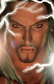 mCast2 (Lightning Caster) |
mCast5 (Blond Hooded Caster) |
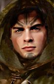 mDruid2 (Druid with face paint) - par Amaurea |
mDruid (Druid in Vegetation) |
| 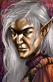 mElf1 (Slightly dark skinned elf) |
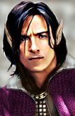 mElf2 (Elf caster type, open collar) - par Amaurea |
mElf3 (Elf caster type, closeup) - par Amaurea |
mGeo01 (Caster with sigils and runes) - par Amedyr |
Humanoïdes Femelles
| 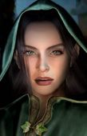 fCast02 (Green Hooded, possibly elven/half-elven) |
fCast15 (Tatooed caster) |
fCast16 (With metal ornamentation) |
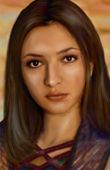 fCast18 (Brown Hair human/half-elf) |
| 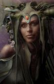 fDruid7 (Druid with headdress) |
fDruid9 (Red headed druid type in brown robe) |
 fHaEl1 (Elf/Half-Elf caster type) - par Amaurea |
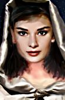 fHaEl2 (White robed half-elf/elf) - par Amaurea |
Ours
| 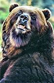 oBear1 (Dark Brown looking over shoulder) - par Amaurea |
oBear2 (Lighter Brown with partially open smiling mouth) - par Amaurea |
oBear3 (Serious looking bear) - par Amaurea |
Chats
| 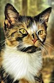 oCat1 (Yellow and orange mottled with white bib) - par Amaurea |
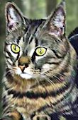 oCat2 (Grey with black bands around neck) - par Amaurea |
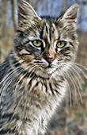 oCat3 (Grey) - par Amaurea |
Chiens
| 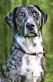 oDog1 (Grey Hound) - par Amaurea |
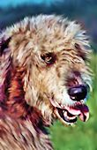 oDog2 (Beige shaggy haired dog) - par Amaurea |
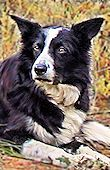 oDog3 (Border Collie) - par Amaurea, image de Skye par Caedwyr |
Léopards
| 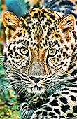 oLeop1 (Leopard) - par Amaurea |
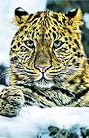 oLeop2 (Leopard with snow) - par Amaurea |
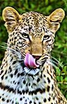 oLeop3 (Leopard with tongue) - par Amaurea |
Elan mâle
 omMoo1 (Moose with head down) - par Amaurea |
 omMoo2 (Moose with head in profile) - par Amaurea |
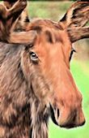 omMoo3 (Chestnut coloured moose) - par Amaurea |
Elan femelle
| 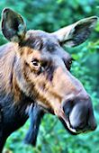 ofMoo1 (Semi-profile perspective) - par Amaurea |
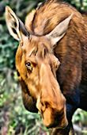 ofMoo2 (Chestnut coloured moose with head down) - par Amaurea |
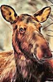 ofMoo3 (Chestnut coloured moose with head up) - par Amaurea |
Panthères
 oPan1 (Shiny black panther) - par Amaurea |
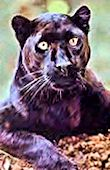 oPan2 (Panther with head cocked to one side) - par Amaurea |
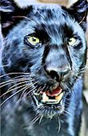 oPan3 (Panther with mouth partially open) - par Amaurea |
Rats
| 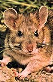 oRat1 (Beige Rat) - par Amaurea |
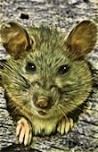 oRat2 (Rat sticking head out of hole) - par Amaurea |
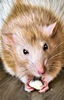 oRat3 (Light rat with food) - par Amaurea |
Serpents
| 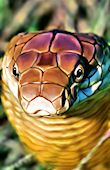 oSnak1 (Snake raising head off grass) - par Amaurea |
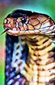 oSnak2 (Cobra smelling its surroundings) - par Amaurea |
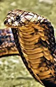 oSnak3 (Cobra with hood partially extended) - par Amaurea |
Loups
| 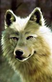 oWolf1 (White wolf) - par Amaurea |
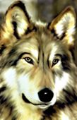 oWolf2 (Grey and white wolf) - par Amaurea |
 oWolf3 (Black Wolf) - par Amaurea |
Contact :
Ce mod a été créé par Caedwyr. Vous pouvez visiter The Gibberlings Three pour plus d'informations sur ce mod ou d'autres mods sur lesquels il pourrait travailler.
Remerciements
- Constant Gaw - Le mod original Druidic Sorcerer kit qui a inspiré ce mod et a fourni quelques fichiers de base à modifier.
- hlidskialf - pour son travail sur le Druidic Sorcerer kit
- aVENGER - pour le sort de tertre errant et son aide au niveau du script de ce sort
- the_bigg - pour son aide en encodage et son autorisation d'utiliser les Capacités de haut niveau Transformation élémentaire et Bénédiction de la nature de "Refinements"
- Littiz - Pour les Capacités de haut niveau Transformation élementaire et Bénédiction de la nature de "Refinements"
- TGMaestro - Pour les Capacités de haut niveau Transformation élementaire et Bénédiction de la nature de "Refinements"
- CamDawg - Pour le code et l'aide à l'encodage
- Avenger - Pour son aide à l'encodage et ses explications à propos de sorts et effets
- BigRob - Pour son aide à propos des icônes des sorts
- devSin - Pour son aide à l'encodage
- erik - Pour son aide à l'encodage
- Gort - Pour son aide à l'encodage
- igi - Pour son aide à l'encodage et ses suggestions
- jastey - Pour son aide sur les dialogues
- Kulyok - Pour son aide sur les dialogues
- Mike1072 - Pour sa relecture et ses suggestions sur la façon d'implémenter un kit de sorcier
- Nythun - Pour son aide à l'encodage, ses suggestions sur la façon d'implémenter un kit de sorcier, et pour m'avoir convaincu de ne pas employer d'horribles hacks pour le mod
- Rabain - Pour son aide à l'encodage
- Miloch - Pour son aide à l'encodage et les bons moments passés sur les "sous-composants"
- plainab - Pour son aide à l'encodage et les bons moments passés sur les "sous-composants"
- vilkacis - Pour les silhouettes d'inventaire du chat et du serpent
- Tassadar88 - Pour les silhouettes d'inventaire du léopard, de l'élan et de la panthère
- Amaurea - Pour son formidable travail de "Baldurisation" des portraits d'animaux et sa permission d'utiliser certains de ses portraits d'hommes et femmes humanoïdes
- Amedyr - Pour sa talentueuse interprétation du portrait du sorcier géomancien mâle
- Zooloo de l'atelier des d'Oghmatiques pour la traduction en langue française
Et à tout ceux qui ont aidé et à qui j'aurais oublié de dire merci.
Outils utilisés lors de la
création
WeiDU
de Wes Weimer et the bigg
Near
Infinity by Jon Olav Hauglid
IESDP
maintenu par igi
DLTCEP
d'Avenger
BAM Workshop II
d'Andrew Bridges
Infinity Explorer
de Dmitry Jemerov
ConTEXT d'Eden
Kirin
WeiDU
ConTEXT Highlighters d'Idobek, mis à jour par
cmorgan
Credits and Copyright Information
This mod may not be sold, published, compiled or redistributed in any form without the consent of its author. The Geomantic Sorcerer Kit mod is ©2007 Caedwyr.
I have no objections to the material contained within this mod being used in other mods or modified for personal use. All I ask is that I be asked for permission to use the material prior to the release of a mod using the material and for the appropriate credit to be given for my work.
Version History
Version 4 - July 8, 2013
- Added paperdolls for cat, leopard, moose, panther, snake courtesy of vilkacis and Tassadar88
- Added French translation by Zooloo of the D'Oghmatiques
Version 3 - May 21, 2008
- Added paperdolls for cat, leopard, moose, panther, snake courtesy of vilkacis and Tassadar88
- Added Portraits for Druidic Shapeshifting component with original and reused artwork by Amaurea and Amedyr
Version 2 - December 1, 2007
- Typo corrections
- Added an item to allow the kit to be applied in Tutu, BGT, or Throne of Bhaal
Version 1 - November 4, 2007
- Initial release